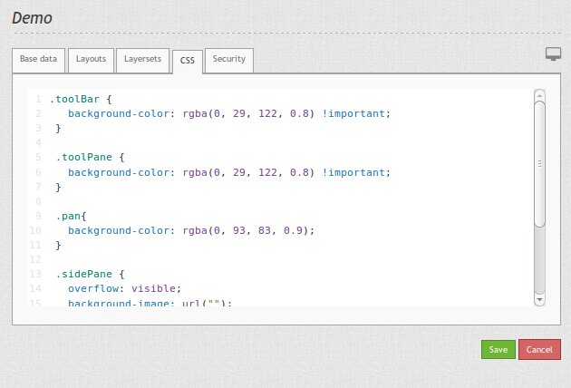

Wie kann der Stil einer Anwendung mit dem css-Editor angepasst werden?¶
Mapbender3 verfügt ab der Version 3.0.4.0 über einen css-Editor zur Anpassung des Stils (Farben, Größen, Icons, ...) einer Anwendung. Über den Editor können css-Klassen definiert werden, die die Standardklassen überschreiben.
Mit Hife von Firebug können Sie die bestehende Definition ermitteln, in den css-Editor kopieren und hier anpassen.
{kind=link}
Über das folgende css können Sie die Farbe der Toolbar und Navigationleiste anpassen. Außerdem setzen Sie die Hintergrundfarbe und Breite der Seitenleiste (sidepane).
.toolBar {
background-color: rgba(0, 29, 122, 0.8) !important;
}
.toolPane {
background-color: rgba(0, 29, 122, 0.8) !important;
}
.pan{
background-color: rgba(0, 93, 83, 0.9);
}
.sidePane {
overflow: visible;
background-image: url("");
background-color: #eff7e9;
}
.sidePane.opened {
width: 350px;
}
{kind=link}
Bis zur Mapbender3 Version 3.0.3.2 müssten eigene Templates mit css-Dateien erzeugt werden, um den Standardstil anzupassen. Der neue css-Editor ermöglicht es, einfach Stil-Anpassungen der Anwendung vorzunehmen. Die Dokumentation zur Erstellung eigener Templates finden Sie unter Wie werden eigene Vorlagen (templates) erzeugt?.